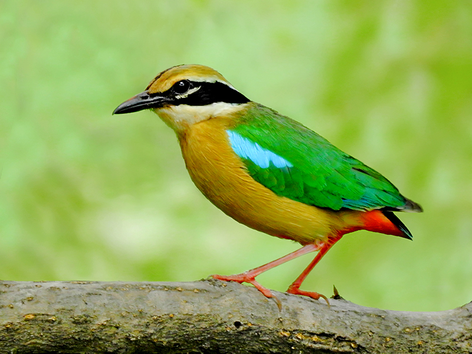

The Indian Pitta is a vividly colored ground-dwelling bird found across the Indian subcontinent. Its rainbow-like plumage and distinctive two-note whistle make it a favorite among birdwatchers.

Indian Pittas prefer dense undergrowth in forests and gardens. They forage on the ground for insects and worms, nest in low shrubs, and migrate seasonally across the Indian peninsula.
Read more about this bird and its wonderous characteristics on portals like E-Bird.